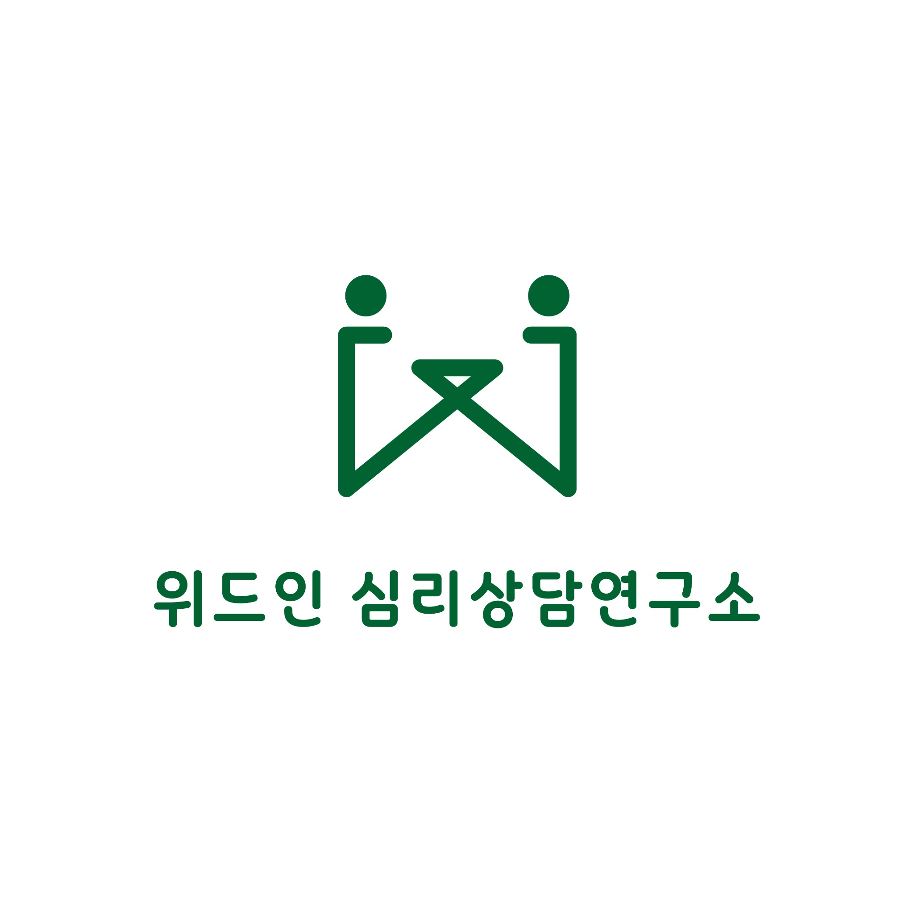
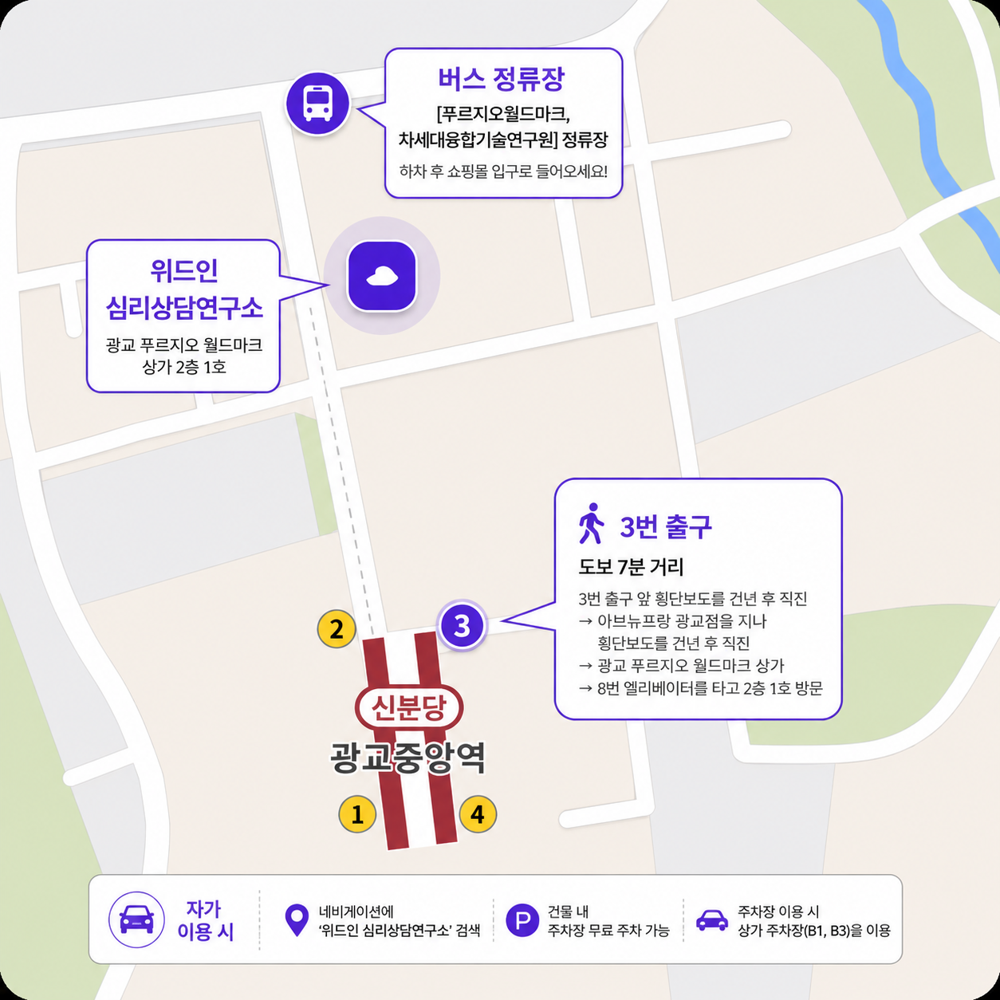

대중교통 이용 시
지하철 신분당선 광교중앙역 3번 출구에서 도보 약 5분. 아브뉴프랑 광교점을 지나 광교 푸르지오 월드마크 상가 8번 엘리베이터를 이용해 2층 1호로 오시면 됩니다.
버스 “푸르지오월드마크, 차세대융합기술연구원” 정류장 하차 후 쇼핑몰 입구로 들어와 7번 엘리베이터를 이용하면 됩니다.
수원 광교 · 전문 심리상담 및 심리검사
위드인 심리상담연구소는 심리학 교수, 석박사, 국가 및 학회 공인 자격을 갖춘 전문가들이 운영하는 상담·심리검사·교육 기관입니다.

within은 ‘안에서, 내면에서’라는 뜻을 담고 있습니다. 내담자분들의 내면에서 새로운 이해와 성장의 힘을 찾는 시간을 지향합니다.
About Within
위드인 심리상담연구소는 정신건강 임상심리사, 청소년 상담사 등 국가 공인 자격과 범죄심리전문가, 중독심리전문가 등 한국심리학회 공인 자격을 갖춘 전문가들이 함께합니다.
within은 ‘안에, 내부에서’라는 의미를 가지고 있습니다. 위드인은 내담자분들이 자신의 내면을 탐색하고 자아를 발견하는 여정에 함께하고자 합니다.
로고는 within의 첫 글자인 W를 바탕으로, 두 사람이 서로 마주 보고 마음을 나누는 모습을 형상화했습니다.
Counseling Areas
모든 상담은 예약제로 운영되며, 당일 상담을 원하시는 경우 상담소로 전화해 주세요.
Psychological Assessment
상담 목적과 현재 어려움에 따라 필요한 검사를 안내하고, 결과를 바탕으로 이해와 개입 방향을 함께 정리합니다.
심리검사 안내 자세히 보기 →Counselors
Location
지하철 신분당선 광교중앙역 3번 출구에서 도보 약 5분. 아브뉴프랑 광교점을 지나 광교 푸르지오 월드마크 상가 8번 엘리베이터를 이용해 2층 1호로 오시면 됩니다.
버스 “푸르지오월드마크, 차세대융합기술연구원” 정류장 하차 후 쇼핑몰 입구로 들어와 7번 엘리베이터를 이용하면 됩니다.
건물 내 상가 주차장 B1, B3 이용이 가능하며, 최대 2시간 주차권 발급이 가능합니다.
